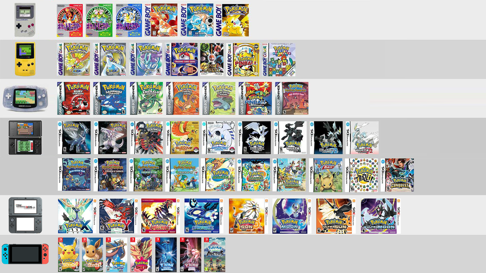

Game Freak
EST. 1983
Predating the video game company, Game Freak was a self-published video game magazine created by Satoshi Tajiri and Ken Sugimori in the 1980s. On April 26, 1989, Tajiri, Sugimori and Junichi Masuda started a video game development company with the same name. One of Game Freak's first games was the Nintendo Entertainment System action and puzzle game Quinty, which was released in North America as Mendel Palace. Its most popular series, Pokémon—the romanized portmanteau of the Japanese brand Pocket Monsters—is published and distributed respectively by The Pokémon Company and Nintendo worldwide.
